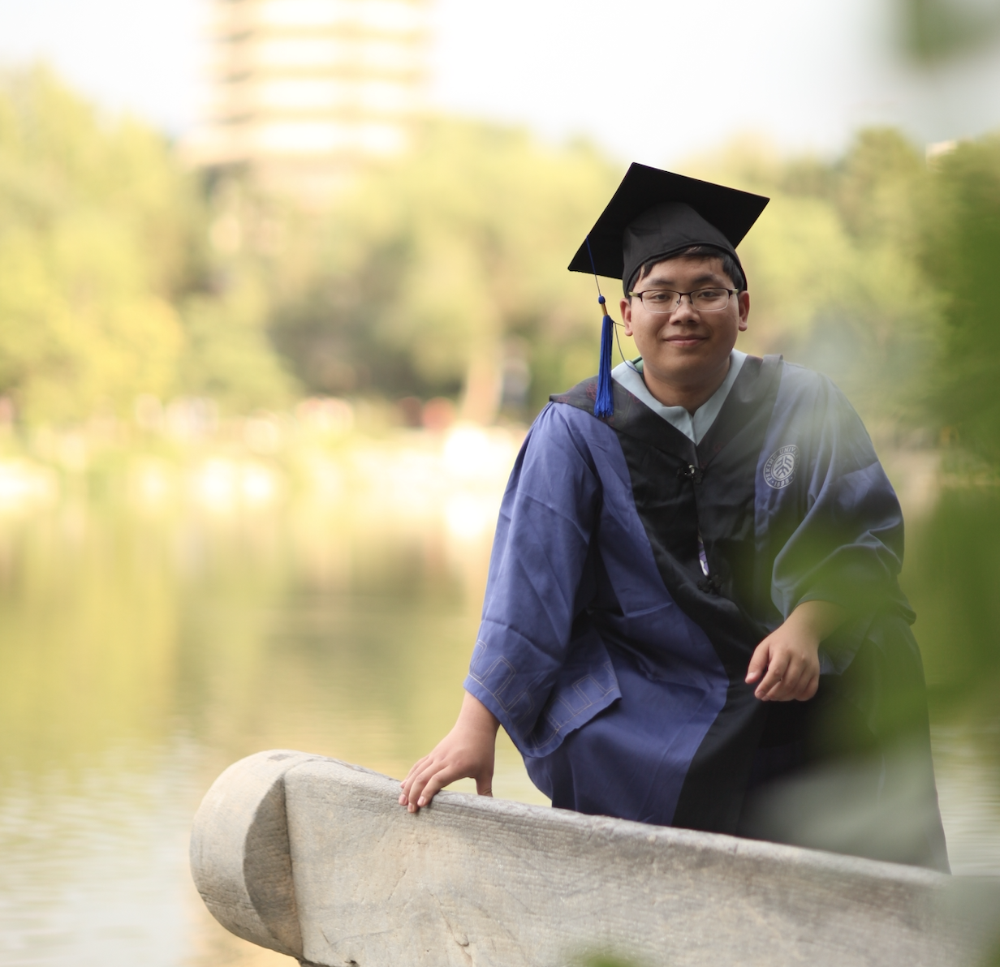

Jingbo Wang/ 王靖博
Ph.D Student at The Chinese University of Hong Kong
wj020@ie.cuhk.edu.hk
Jingbo Wang


 I am currently a first-year Ph.D student at The Chinese University of Hong Kong ( MMLAB ),
supervised by Prof. Dahua Lin. Before that, I received my Master degree from Peking University in 2019,
supervised by Researcher Gang Zeng and my Bachelor degree from Beijing Institute of Technology in July 2016.
I am currently a first-year Ph.D student at The Chinese University of Hong Kong ( MMLAB ),
supervised by Prof. Dahua Lin. Before that, I received my Master degree from Peking University in 2019,
supervised by Researcher Gang Zeng and my Bachelor degree from Beijing Institute of Technology in July 2016.
 Now, my research interests focus on modeling video based structure and semantic formulation, such as Video Based Pose Estimation, Action Recognition and
Events Prediction, et.al,. Before I came to CUHK, I also did research on 2D/RGB-D Semantic Segmentation.
Now, my research interests focus on modeling video based structure and semantic formulation, such as Video Based Pose Estimation, Action Recognition and
Events Prediction, et.al,. Before I came to CUHK, I also did research on 2D/RGB-D Semantic Segmentation.
- 2021.2 One paepr is accpetd by CVPR 2021
- 2020.11 One paper is accepted by NeurIPS 2020.
- 2020.08 Our BiSeNet is Top-17 cited among all papers in ECCV2018.
- 2020.07 Three papers are accepted by ECCV 2020.
- 2020.03 One paper is accepted by CVPR 2020.
- 2019.08 Coming to MMLab .
- 2019.03 One paper is accepted by CVPR 2019.
- 2018.09 As a team member of Megvii(Face++) and R4D Team, we won the 1st place of COCO Panoptic Segmentation and Mapillary Panoptic Segmentation in the COCO & Mapillary Panoptic Segmentation Challenge 2018. [ChinaNews]
- 2018.07 One paper is accepted by ECCV 2018.
- 2018.03 One paper is accepted by CVPR 2018.